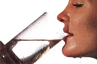

From Mother No. 84
Do you drink enough?
A number of years ago, the Swiss put together a fine mountain-climbing team, hopping it would be the first to scale Mount Everest. Many months went into the group's preparation because of the tremendous demands that would be made upon human energy in the effort to reach the top of the world. Unfortunately, despite all that careful planning, the Swiss team had to abandon the attempt because of sheer exhaustion, not realizing that a source of relief was covering the ground all around them.
A year or so later, when a group of British climbers undertook the same challenge, their team physician, Sir John Hunt, remembered that the Swiss had consumed only two cups of water per day during their assault on the mountain. Dr. Hunt recommended that the U.K. team carry additional snow-melting equipment, since he believed that the climbers would function better if they drank more water. He felt that when working in the thin, chill air, people lose a lot of water not only through perspiration, but also through respiration, because the air entering the lungs has to be humidified as it's brought nearer to body temperature. Therefore, the doctor in sisted that each Brit ish participant drink a mini mum of 12 cups of water daily. That team, headed by Sir Edmund Hillary, followed his advice and became the first expedition to plant its flag on the summit of the world's highest peak.
In order to further examine Dr. Hunt's theory about how water consumption affected endurance, a Harvard physiologist, G.C. Pitts, tested groups of male ath letes by putting them on treadmills timed at 3-1/2 miles per hour.
The subjects in the first group were given no water at all and were asked to walk until they were so fatigued that they could go no farther. These athletes lasted about 3-1/2 hours. Their temperatures rose rapidly during the test period and, in the exhaustion phase, finally reached an average of above 102° F.
The members of the second group were allowed to drink as much as they desired, and their temperatures didn't rise nearly as rapidly. However, after approximately six hours of exercise on the treadmill, as the men reached exhaustion, their body heat zoomed up.
Finally, Dr. Pitts chose a third group and carefully calibrated their water losses, replacing the exact amount of water lost (about one cup every 15 minutes) while the men were exercising. As a result, though they stayed on the treadmill seven hours, the test subjects did not experience a drastic rise in temperature nor did they reach exhaustion. In fact, when asked how they felt, they replied that they could go as long as the doctor wanted them to!
Several conclusions can be reached from these experiments. The first is that thirst isn't necessarily a good indicator of the body's need for water. You must, in general, drink more liquid than your thirst seems to call for. Second, there's a close relationship between water consumption and fatigue. Third, water appears to have a significant effect upon the regulation of body temperature. And fourth, a more active person is in greater need of water because of the dehydrating effects of perspiration and rapid breathing.
You may wonder how to tell when you're not getting enough water. Well, there are a number of clinical signs to watch for. In America, for example, many adults and children are afflicted with constipation. (It's estimated that the laxative business takes in some $200 million each year.) This bowel dysfunction is often one of the first signs that your water intake is inadequate. Because the rest of the body has a higher priority for water, the intestinal tract can be shortchanged, and the result is hard stools. Unfortunately, few people heed this warning. Instead, folks typically head for the drugstore to buy medication that forces the rest of the system to return water from its own limited supply to the intestinal tract. Of course, such a "cure" is only temporary and actually compounds the problem.
Yet another easily recognized symptom is dark yellow urine. Our kidneys are equipped with millions of filtering units to remove impurities and return the purified fluid to the bloodstream. Since filtration is the organ's first priority, it will continue its job even if this means producing a very highly concentrated urine. Over a long period of time this can lead to the development of kidney stones, urinary tract infections, and other bladder problems.
"Dry mouth," caused by decreased salivary gland function, can also result from low water intake. On the other hand, a person who drinks enough water seems not to need much during meals, since his or her saliva glands are operating properly.
When you realize that 60% to 70% of your total body weight is made up of water, it's not too difficult to understand that nearly every function of the body happens in a more or less liquid medium. In fact, without the amazing recycling operation of the kidneys, you'd have to drink approximately 2,500 gallons (or 40,000 cupfuls) of water every day!
So you have a choice to make: You can get water by recycling it, so to speak, which overrefines a limited supply through the body's filters, or you can consume more fresh water. If you take the first route, you risk actually increasing the impurities in your body by not giving it an adequate amount of diluting liquid. In fact, when a person becomes dehydrated, he or she loses moisture from all of the body's cells. This in turn allows the by-products of cell metabolism to build up and can slow the operation of, or actually poison, the cells.
Generally speaking, the average person loses at least two cups of water daily through the respiratory process. Another two cups are emitted through perspiration, even when no significant amount of physical work is carried on, and the intestines and kidneys together lose a total of about six cups during the day. So if you add it all together, you come up with a total loss of ten cups (and that's not counting any excess lost through perspiration during exercise).
Next, consider where the body gets its fluids . . . or better still, where it should get them. Because most food contains a large amount of water, you obtain approximately 3-1/2 cups from what is eaten over the course of a day. Interestingly, the body's metabolism itself is another source; as it makes and uses energy, one of its daily byproducts is about half a cup of water.
Therefore, taking into account the approximately four cups provided by food and metabolism, and the ten cups lost, the average person needs to drink six to eight cups of water daily just to keep functioning well. This requirement changes, of course, according to the environment and the type and quantity of food you eat. A person spending a hot day mowing the lawn would obviously require more liquid than someone relaxing in the shade, and a marathon runner may drink as much as a cup of water for every 15 minutes of running.
The body cannot economize on water. Because temperature control has a very high priority in the body's operation, the human system will dehydrate itself in the struggle to keep cool. It's been reported that such fluid losses can actually reach two quarts a day in very hot climates, and people have been known to lose as much as 15 quarts in 24 hours. In fact, perspiration continues to provide cooling even when a person is dying of thirst in the desert!
Most of us will never experience such drastic fluid loss, but the more rapidly you lose water, the more quickly you need to replace it if you're to continue to function without becoming fatigued.
Water intake is also related to the amount of food you eat. Research has shown that an adult needs approximately one cubic centimeter of water for each calorie consumed. So if you consume 2,000 calories a day, you should drink 2,000 cc (roughly & 8-1/2 cups) of water.
If you don't know how many calories you're averaging daily, you can estimate your need for liquid by dividing your ideal weight by two, which will indicate the number of ounces of water you should be drinking. To find out how many cups you need, divide this quotient by eight. For example, a fit person weighing 150 pounds would come up with a calculation of 75 ounces, or 9 to 9-1/2 cups. If, however, you weigh 160 pounds but should be 30 pounds lighter, you'd compute your water needs using that "should be" figure.
Now that you know how much water you need, the next question is when you should drink it. It's usually best to replace liquid as your body eliminates it. In other words, there's no point in getting up in the morning and downing your eight cups all at once. Your kidneys would soon eliminate this excess, and it wouldn't be available when you needed it later in the day. However, after a night's sleep, your body is somewhat dehydrated, so you should start replacing water by drinking about two cups at least 15 minutes before you have breakfast. Once you've had your morning meal, wait a couple of hours to make sure your food has left your stomach, and then have another two cups. Drink two or three more throughout the afternoon, and have one or two after supper. This adds up to a total of seven or more cups of water during the course of your day.
Two things are likely to happen if you follow this regimen. First, your thirst will be quenched. Second, not only will you replace the fluids your body needs, but you'll do so with a liquid that may be more healthful than that which you normally imbibe.
Let's take a look at some of America's most popular beverages. The first is coffee, which eight out of ten adults consume at an average of 3-1/2 cups a day. That may not sound like a lot, but it accounts for about 76% of the nearly 34 million pounds of caffeine Americans consume annually, and that drug has an interesting effect on the body. Obviously, it acts as a stimulant. It causes the adrenal glands above the kidneys to pour out two very powerful chemicals: epinephrine and norepinephrine. Those, in turn, cause a rise in blood pressure, constricting blood vessels and giving one a feeling of increased mental acuity and physical ability. However, this stimulation is short-lived, so people who drink the brew habitually need a coffee break in the midmorning and again in midafternoon to keep them going throughout the day.
To avoid this, some people turn to decaffeinated coffee. While it's true that this beverage has had most of the caffeine removed, that process doesn't have any effect on the caffeols that account for coffee's flavor and aroma. And, unfortunately, these fragrant oils irritate the stomach lining, causing it to produce excess amounts of hydrochloric acid, which can play a prominent role in the development of stomach ulcers.
Yet another popular beverage is the carbonated soft drink, which usually is composed of water, sugar, and artificial colorings and flavorings. It has little or no nutritional value and may even have stimulants (including caffeine) in it. Yet Americans consume millions of gallons of these liquids every week.
A third fluid many of us drink (to our detriment) is alcohol. Most research indicates that if liquor is drunk in moderation, it isn't harmful. However, consider the recent study done at the University of Florida's College of Medicine. Researchers gave one group of men, ranging in age from their 20s to their mid-60s, plain orange juice before bedtime, while another group drank a shot of vodka. When the research staff followed the reactions of these men throughout their sleeping hours, it was found that those who drank alcohol had a significant increase in disturbed breathing during the night (some even stopped breathing for as long as ten seconds). The study also determined that these normal, healthy, asymptomatic men experienced a decrease in the oxygen-carrying ability of their blood.
Drinking fruit juices isn't always the best alternative, either. When the fibers and pulp, which play a vital role in the digestion of fruit, are removed, the concentration of natural sugars is increased. These are then absorbed much more rapidly by the body. Since this can be a problem for anyone with a prediabetic or diabetic condition, it's generally best to eat the whole fruit rather than drink its juice.
If you increase your water intake, you'll probably decrease your consumption of the other beverages that so often crowd out this life-sustaining liquid. "But water just doesn't appeal to me at all," you may complain. Well, remember that appetites can be changed. Although it's been said that it takes 39 days of continual practice to develop a new habit, the process may get easier as that period goes on, and eventually you'll reach a point where you actually crave water. In fact, people who have become accustomed to having their bodies well hydrated sometimes find that they become thirsty much more frequently than before. Just as their bodies once adjusted to being given little water, they have adjusted to an increased supply.
To help you attain the goal of proper water consumption, make up a chart and tabulate the number of cups you drink upon arising, throughout the morning, during the afternoon, and in the evening. The following general rules may help you achieve a healthful regimen.
First, don't drink any water within 15 minutes before eating. Second, give your stomach up to an hour and a half after meals to digest most of your food undiluted by water; mealtime is not the time to take in large amounts of liquid. (Milk is the only beverage that serves as an exception to this rule, since it becomes a semisolid in the stomach.)
As you do your day's work, put a cup of water in front of you. When it's emptied, fill it up again. You'll be astonished at how much you toss off without any difficulty. Make it a habit to stop and refresh yourself every time you pass a drinking fountain. Or try putting a pitcher containing your estimated daily requirement of water in the refrigerator, and periodically have a glass until it's used up.
Initially, you may find yourself visiting the rest room more frequently than you have in the past. There's nothing wrong with this. Don't worry that you'll wear out your kidneys! With an adequate supply of water, they'll actually have a much easier time functioning normally.
Finally, try to be patient with yourself. It does take time for the body to adapt. It also takes time to learn a new habit. This one, however, is good for you!
EDITOR'S NOTE: This article was adapted from a six part seminar developed by Dr. Philip Collins, a health consultant for Carolina Health Care. Please address any inquiries to Carolina Health Care, 53 S. French Broad, Asheville, NC 28801.
|
 |
|
|